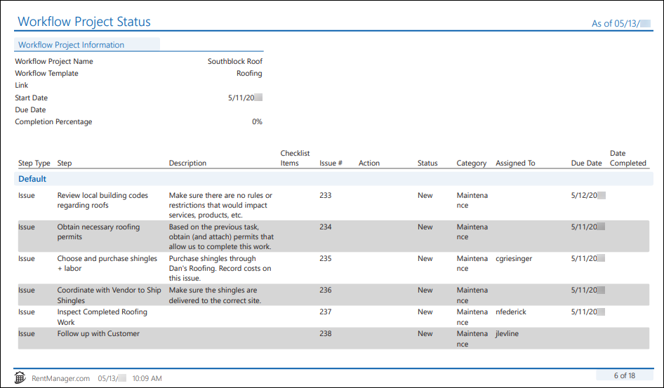
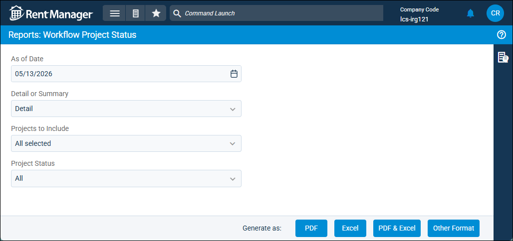

Source: https://rmxhelp.rentmanager.com/Topics/Express/Other/Reports/Workflow-Project-Status.htm
Workflow Project Status (Report)
The Workflow Project Status report displays details of your completed and/or ongoing workflow projects, including the due dates and completion statuses of each step (service issue or task) in the project. This report can be used to quickly provide a breakdown of how one or more of your workflow projects progress.
Related Privileges
| Group | Privilege | Column |
|---|---|---|
| Letter/Email Templates/Reports/Packets | Run reports | Enabled |
Additionally, on the Reports tab, you must have access to Workflow Project Status.
For more information, refer to Control User Access.
To view the Workflow Project Status report, do the following:
-
Go to
 arrow_forward Services arrow_forward Service Manager arrow_forward Workflow Project Status.
arrow_forward Services arrow_forward Service Manager arrow_forward Workflow Project Status.
The Reports: Workflow Project Status page displays. -
Adjust the report options as desired. Each option is described below.
-
Generate the report in your desired file format(s).

More Information
To generate this report directly from a specific workflow project, on the Workflow Project details page, click on the top right.
Report Options
The report options described below determine what data displays in the report.

As of Date
Rent Manager examines relevant report information as of (up through) the date entered to determine the data that displays in the report.
Detail or Summary
This option determines how much information is displayed in the report.
| Option | Description |
|---|---|
|
Detail |
Displays the text entered on the step's Description field for each associated service issue or task. |
|
Summary |
Displays condensed information about associated steps without the step description(s). |
Projects to Include
Select each workflow project to include in the report results. For more information on workflow projects, refer to Workflow Projects and Templates.
Project Status
Select All, Current, or Completed to determine which projects display in the Projects to Include report option.
Report Results
The report options described below determine what data displays in the report.
Report Header
The report header displays the report name and key information selected in the report options, such as date information and which properties were examined in the report.
Workflow Project Information
The Workflow Project Information section displays the workflow project's details, including the project's name, template, and more. The following fields display in this section:
| Field | Description |
|---|---|
|
Completion Percentage |
The percentage of steps (either service issues or tasks) in the workflow project that have been completed as of the report date, calculated using the following formula: Completion Percentage = # of Steps Completed / Number of Steps in the Workflow Project |
|
Due Date |
The calendar date the workflow project must be completed, as entered on its Workflow Project details page in the Due Date field. |
|
Link |
The entity (e.g., Tenant, Property, etc) that the project is linked to. |
|
Start Date |
The calendar date the workflow project begins, as entered on its Workflow Project details page in the Start Date field. |
|
Workflow Project Name |
The name of the Workflow Project, as it displays on its Workflow Project details page. |
|
Workflow Template |
The name of the workflow template from which the workflow project was created. |
Column Descriptions
The columns that display in the report are described below.
| Column | Description |
|---|---|
|
Action |
The work required to complete the task. For issues, this column is blank. |
|
Assigned To |
The user responsible for completing the step. |
|
Category |
The classification that best describes the type of issue to be completed. For tasks, this column is blank. |
|
Checklist Items |
The checklist item progress of the service issue, as it displays on the Issue details page in the Checklist tile. For example, if five out of seven checklist items are completed, the column displays 5/7. For tasks, this column is blank. |
|
Date Completed |
The calendar date in which the step Status moves to Closed. |
|
Description |
A brief explanation or comment providing information regarding the step. The column displays only if the Detail report option is selected. |
|
Due Date |
The calendar date the step is to be completed. |
|
Issue # |
The unique number assigned to the service issue as it displays on the Issues page in the Issue ID column next to the issue. For tasks, this column is blank. |
|
Status |
The condition that describes the current progress of the task or issue, such as New or Closed. |
|
Step |
The unique name that defines the step. This name serves as the Title of the issue or the Subject of the task. |
|
Step Type |
The kind of step—either Issue or Task—to be completed. |